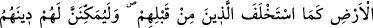
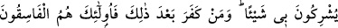
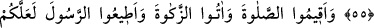
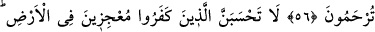
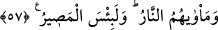
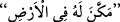

İNANANLAR İÇİN HÜKÜMRANLIK
55. Allah, sizlerden îman edip sâlih amel işleyenlere, kendilerinden öncekileri
sâhip ve hâkim kıldığı gibi onları da yeryüzüne sâhip ve hâkim kılacağını, onlar için
beğenip seçtiği dini (İslâm’ı) onların iyiliğine yerleştirip koruyacağını ve
(geçirdikleri) korku döneminden sonra, bunun yerine onlara güven sağlayacağını
vaad etti. Çünkü onlar bana kulluk ederler; hiçbir şeyi bana eş tutmazlar. Artık
bundan sonra kim inkâr ederse, işte bunlar asıl büyük günahkârlardır.
56. Namazı kılın; zekâtı verin; Peygamber’e itâat edin ki merhamet göresiniz.
57. İnkâr edenlerin, yeryüzünde (Allah’ı) âciz bırakacaklarını sanmayasın!
Onların varacağı yer cehennemdir. Ne kötü varış yeri!
“Allah, sizlerden îman edip sâlih amel işleyenlere, kendilerinden öncekileri sâhip
ve hâkim kıldığı gibi” yâni Allah İsrâiloğulları’nı Fir’avun ve zâlim kralları helâk
ettikten sonra Mısır ve Şam’a hâkim kıldığı gibi “onları da yeryüzüne sâhip ve hâkim
kılacağını,” vaad etti. Bu cümle, ya “Allah onları yeryüzüne hâkim kılacağına söz verdi
ve yemin etti” mânâsında gizli bir yeminin cevabıdır. Ya da muhakkak vukû
bulacağından dolayı Allah’ın vaadi yemin yerine konulmuş ve bu cümle onun cevabı
olmuştur: Yâni onları, kralların kendi mülklerinde tasarruf ettikleri gibi yeryüzünde
tasarruf edecek halifeler kılacağını vaad etti, demektir.
“Onlar için beğenip seçtiği dîni (İslâm’ı) onların iyiliğine yerleştirip
koruyacağını…”
“
”, bir şeyi başkası için mekân yapmaktır. ‘Yeryüzünü, onun için yerleşme
mekânı yaptı’ anlamında
denir. Tâcü’l-masâdır’da şöyle denir: “
”
Elvermek, yerleştirmek, demektir”
Ebû Ali de âyetin, dînin hemen gelişip yerleşecek bir noktada bulunduğunu ifâde